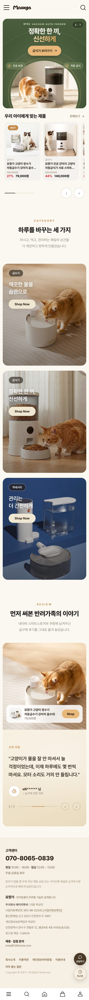
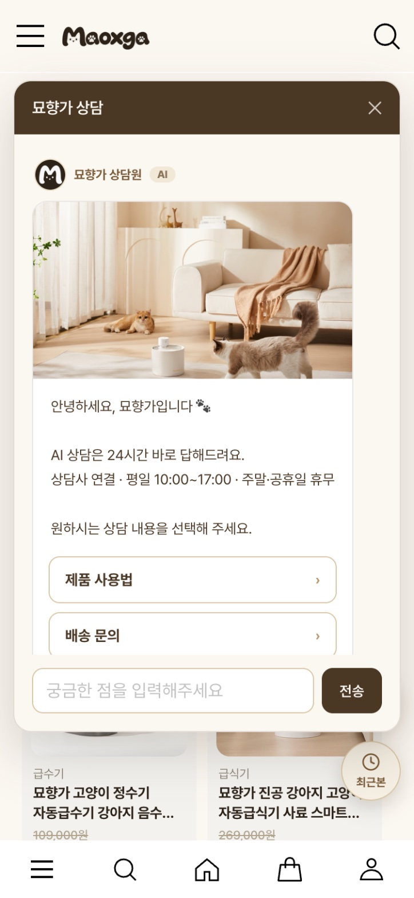
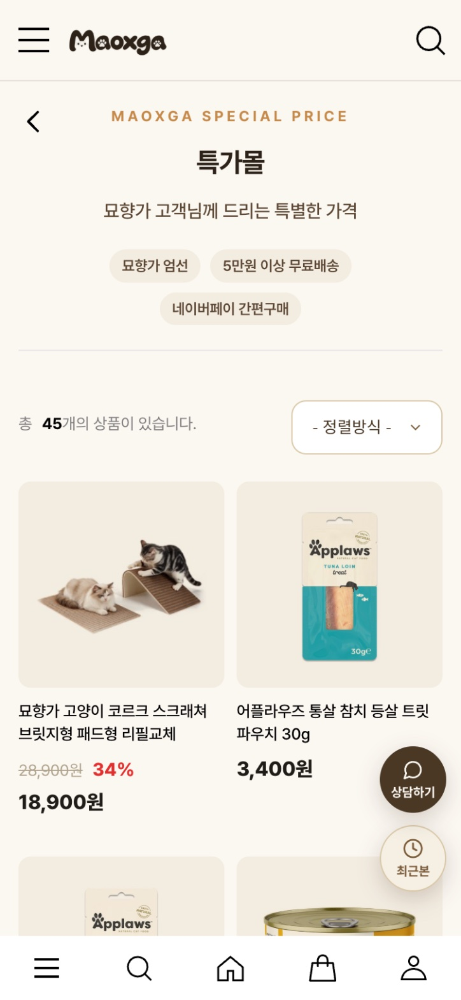

Web Project · Product Designer · 심녕호
Plan. Design. Build.
홈페이지 기획부터 디자인, 구현, 운영까지 직접 맡습니다.
AI 코딩 도구로 빠르게 만들고, 운영 데이터로 검증합니다.
Scroll
About
홈페이지와 업무 시스템을 기획, 디자인, 구현, 운영까지 한 사람이 맡아 왔습니다. AI 코딩 도구로 빠르게 만들고, 운영 데이터로 검증합니다.
Selected Work
Selected
Work.
카드 속 화면은 스크롤에 맞춰 움직입니다.
실제 운영 화면이며, 고객 이름과 번호는 가렸습니다.
Case · 묘향가 자사몰
카페24 자사몰 리뉴얼,
모바일 우선 설계.
- 01로그인 · 회원가입
휴대폰 375px 너비에서 먼저 확인하고 데스크톱으로 넓혔습니다.
- 02장바구니 · 구매바 · 네이버페이
상품상세 하단 구매바에서 바로 결제까지 이어집니다.
- 03브랜드 페이지 · 홈 배너
브랜드 소개와 배너 슬라이더로 첫 화면을 구성했습니다.
- 04실시간 상담 위젯
상담 답변이 등록되면 이메일로 알림이 갑니다.
- 05메타 픽셀 · 회원 특가몰
광고 성과 측정과 회원 전용 특가 페이지를 붙였습니다.



Operation
운영하며 직접 찾고 고친 문제.
AI와 함께 설계·구현하고, 실제 운영 중 생긴 장애의 원인을 찾아 고쳤습니다.
DB 인덱스 원인 파악
25초이전 25초
저장본 먼저, 최신화는 뒤에서
11.6초이전 11.6초
300건에서 잘리던 목록
전체 표시페이지 넘김 처리로 해결
실패 응답이 0원으로 저장
재발 방지원인 수정 · 실패 응답 캐시 차단
For HUTECHC
공고에 맞춰 준비한 샘플 3개.
모두 AI 코딩 도구로 만들었고, 휴대폰과 데스크톱에서 확인했습니다.
Sample 01 · Web Design
홈페이지 시작 틀
랜딩 홈페이지를 빠르게 만들기 위한 시작 틀입니다.
- 대표 색 한 줄로 브랜드 색 전체 변경
- 어두운 · 밝은 분위기 전환
- 한 · 영 전환 버튼
- 소개 · 서비스 · 후기 · FAQ · 상담 신청 구성
공고 · 홈페이지 제작 월 3개샘플 열기 ↗
Sample 02 · Motion
대시보드 모션
관리자 화면의 움직임을 정리한 샘플입니다. 일부는 H2B 운영 대시보드에 실제로 적용했습니다.
- 칸반 카드 끌어 옮기기 · 자리 재배치
- 메뉴 전환 · 팝업 · 오른쪽 상세 패널
- 캘린더 월 전환 · 일정 표시
- 차트 기간 전환 · 툴팁
공고 · 관리자 시스템 · UIUX샘플 열기 ↗
Sample 03 · AI
서술형 AI 채점
출제 → 응시 → 결과 → 분석 흐름의 시험 플랫폼 샘플입니다. 지금은 채점 기준 핵심어 비교로 동작하고, 실제 서비스에서는 AI API로 교체합니다.
- 문항별 채점 기준 · 배점 등록
- 한 · 영 시험지 전환
- 점수 · 피드백 · 문항별 분석
- 가짜 데이터로 만든 시연용 화면
공고 · 주관식 자동 채점 · AI 분석샘플 열기 ↗
On-device AI
서버 없이 이 노트북에서 도는 AI.
모델을 처음 한 번 내려받은 뒤에는 모든 처리를 브라우저 안에서 합니다. 입력한 글과 사진, 카메라 영상은 외부 서버로 보내지 않고, API 키도 쓰지 않습니다.
서술형 답안 채점
LLM 없이 브라우저 안에서 채점합니다. 규칙으로 먼저 거르고, 작은 AI 모델이 표현이 달라도 같은 뜻인 답을 찾아 점수를 줍니다.
교재 2단원 · 광합성 · 10점
학생 답안 · 눌러서 바꾸기
식물이 광합성을 할 때 필요한 것과, 광합성으로 만들어지는 것을 모두 쓰시오.
규칙 + multilingual-e5-small · 118MB · Transformers.js
–/ 10점
채점 대기
핵심어뜻으로 인정개인정보 가림
채점 기준
규칙 검사
모델 준비 중
AS 문의 자동 분류
H2B 톡톡 자동응답과 같은 흐름을 기기 안에서 처리합니다. 문장의 뜻을 숫자로 바꾼 뒤 유형별 예시 문장과 비교합니다.
multilingual-e5-small · 118MB · Transformers.js
분류 결과
–
가장 가까운 예시 문장을 찾는 중입니다.
추천 답변
모델 준비 중
상품 사진 배경 제거
자사몰 상세페이지용 누끼 작업을 브라우저에서 처리합니다. 직접 올린 사진도 이 노트북 밖으로 나가지 않습니다.
묘향가 상품 사진ISNet · 44–88MB · Transformers.js
탭을 열면 모델을 불러옵니다
카메라 손 인식
손 모양과 관절 21개의 위치를 실시간으로 읽고 화면 속 모션을 움직입니다. 카메라 영상은 저장하거나 전송하지 않습니다.
- 검지 끝을 따라 빛이 움직입니다.
- 엄지와 검지를 모으면 빛이 작아집니다.
- 손바닥 · 주먹 · 브이 · 엄지 척에 따라 색이 바뀝니다.
MediaPipe Gesture · 8MB · WebGL
인식한 손 모양–
– fps
카메라 켜기를 누르면 시작합니다
Job Fit
공고 항목과 해 본 일.
해 본 일샘플 준비비슷한 일배우는 중
홈페이지 제작 · 수정 · 월 3개 납품
묘향가 자사몰 리뉴얼(카페24) · 홈페이지 시작 틀(샘플 1)
해 본 일관리자 시스템 · 회원관리 · DB
H2B 대시보드 · 로그인 토큰, 경로별 권한, 비밀번호 해시 · PostgreSQL
해 본 일UIUX · 기획 · PM
EarthMera 3개 프로덕트 디자인 리드 · 업체 홈페이지 제안서와 견적 작성
해 본 일바이브 코딩 (우대)
모든 작업을 AI 코딩 도구로 구현하고 직접 배포 · 운영
해 본 일주관식 자동 채점 · AI 결과 분석
H2B 상담 AI 자동답장 · 대화 요약 운영 · 서술형 AI 채점(샘플 3) · 기기 안 채점 시연
샘플 준비자동 마케팅
메타 픽셀 설치 · 상담 답변 이메일 알림 · 노션 · 구글시트 자동 연동
비슷한 일음성 · 영상 · 번역 데이터 AI 분석
외부 AI API 연결 방식으로 접근 · 처음 다루는 영역
배우는 중온디바이스 (우대)
브라우저 안 AI 시연 4종(서술형 채점 · 문의 분류 · 배경 제거 · 손 인식) · 앱 · 기기 탑재는 배우는 중
샘플 준비How I work
월 3개 납품 흐름.
1요청 정리
고객 요청을 한 장으로 정리하고 범위와 일정을 확정합니다.
2기획 · 시안
구조와 화면 시안을 Figma로 만들어 먼저 확인받습니다.
3구현 · 배포
시작 틀과 AI 코딩 도구로 구현하고 바로 배포 링크를 공유합니다.
4수정 · 유지보수
수정 요청을 반영하고, 운영 중 문제는 원인부터 찾아 고칩니다.